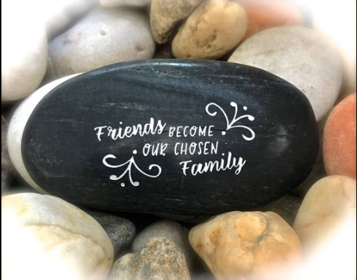

Friendship is a bond between two or more people. These people are called friends. Friends need each other for fun and help. Without friendship, life would be lonely and sad. Friendship is like happiness gifted to us by God. We can share so many things with friends. We can share joy, sorrow, and your feelings. Just being with friends feel support. FRIENDS give you and give you advice. Friends will always be there for you in need. You can trust them and have faith in them. They never judge you or put you down. If a friendship is a garden, friends are flowers. Together they make your life smell like flowers. We must always hold onto friendship and friends.
True friendship is a deep bond characterized by mutual trust, loyalty, and unwavering support that endures through both good and bad times. It involves acceptance, honesty, and empathy, creating a safe space where individuals feel respected and understood for who they are. True friends make time for each other, respect their boundaries, and have a genuine interest in their lives. Key components of true friendship Trust and honesty: True friends are dependable and trustworthy. They are honest with you, even when the truth is difficult to hear, and you can confide in them knowing your secrets are safe. Unconditional support: They stand by you during both triumphs and failures. A true friend is a cheerleader in your corner and a shoulder to cry on, offering emotional support without judgment. Acceptance: A true friend accepts you for who you are, including your flaws. They embrace your quirks and see beyond your mistakes, which makes you feel appreciated and better about yourself. Loyalty: They remain loyal and are there for you through difficult times, rather than gossiping behind your back or abandoning you. Empathy and understanding: They show concern for your thoughts and emotions and understand you on a deep level, sometimes without the need for extensive explanation. Making time: Despite busy lives, true friends prioritize and make an effort to stay in contact and see you. Shared values: While friends can be very different, a foundation of shared core values contributes to a strong and lasting bond.
Liam and Owen were the best of friends, their bond forged over years of shared adventures, laughter, and support. However, their friendship was not without its trials. On a long journey through a vast, unforgiving desert, a heated argument erupted between them over a trivial matter. In a moment of frustration and anger, Owen slapped Liam across the face. Hurt and shocked, but choosing not to retaliate or argue further, Liam knelt and wrote in the sand: "Today, my best friend Owen slapped me in the face." They continued their silent walk, the tension thick in the air, until they stumbled upon a beautiful, clear oasis. They decided to bathe to wash away the dust and the lingering animosity. While in the water, Liam, the one who had been slapped, unexpectedly got caught in a patch of deep mud and began to drown. Without a second's hesitation, Owen jumped in and saved his friend's life. After recovering on the shore, gasping for air, Liam picked up a sharp stone and carefully carved a message onto a large rock: "Today, my best friend Owen saved my life." Owen, bewildered by his friend's actions, asked, "Why did you write in the sand when I hurt you, but carve into stone when I saved you?" Liam smiled, his eyes filled with gratitude and a profound understanding. "When someone hurts us," he explained, "we should write it down in the sand where the winds of forgiveness can easily erase it away. But when someone does something good for us, we must engrave it in stone, so no wind or time can ever erase it from our hearts and memories." Owen was deeply touched by the wisdom of his friend's words. From that day on, their friendship was stronger than ever, built on the foundation of shared strength, support, and the powerful magic of forgiveness. They learned that true friendship isn't about avoiding mistakes, but about cherishing the good and letting go of the bad.
 more cinematic example